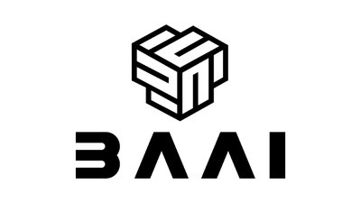
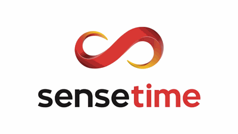
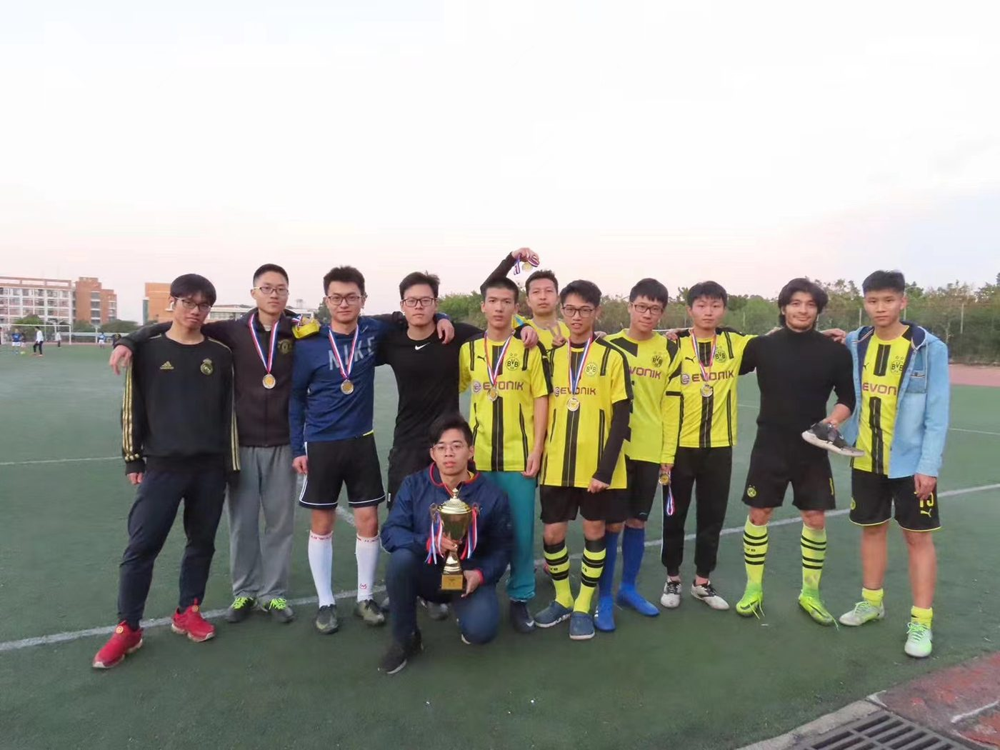
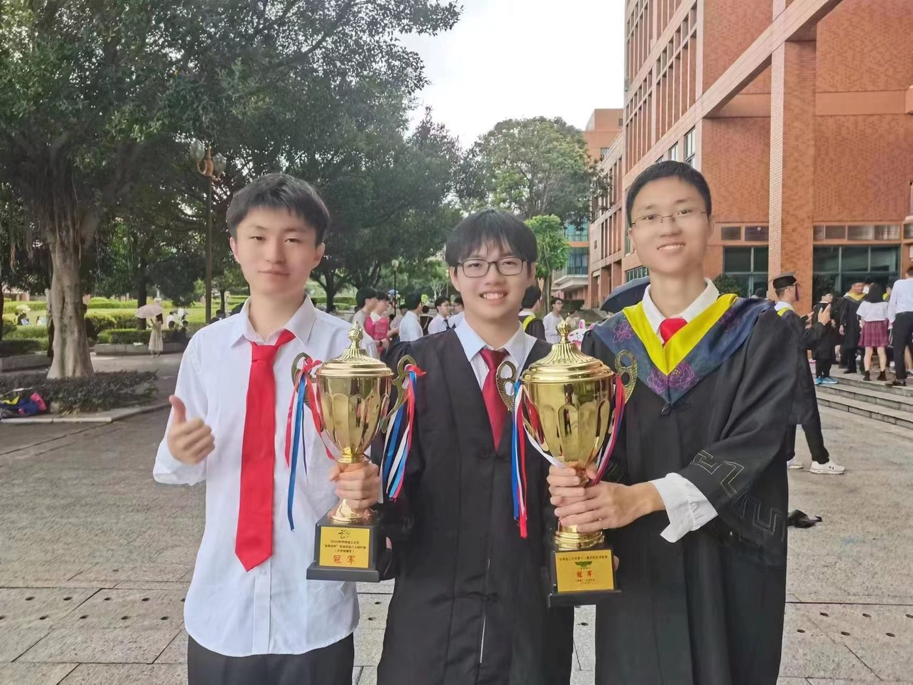

Understanding and evaluating multi-modal LLMs
What do these models actually know? See our work on core knowledge deficits.
Machine Learning & Data Science, Electrical and Computer Engineering, UC San Diego
My research focuses on the learning aspects of AI — making learning efficient (label efficiency ICCV 23, CVPR 23; sample efficiency AAAI 25, ICCV 25, and synthetic data) and robust (ICCV 23, TMLR), across multi-modal (ICLR 25, ICCV 25), interactive and 3D embodied settings.
I am also broadly interested in the applications of AI — LLM agents (MAS), AI for science and AI for health.
I earned my M.S.E. in Computer Science at Johns Hopkins University and my B.E. in Computer Science at South China University of Technology.
I have had the privilege of working with Prof. Alan Yuille as a research assistant in CCVL, and with Prof. Haohan Wang at DREAM Lab, UIUC. I have also spent time as a research intern at the Beijing Academy of Artificial Intelligence and SenseTime Research.
I co-founded GrowAI, a research organization and community promoting research on AI that can learn and grow like humans.
What do these models actually know? See our work on core knowledge deficits.
Language is semantic, abstract and compositional. Can it anchor visual representation learning?
3D-aware architectures for multi-modal LLMs, and 3D representations emerging from 2D supervision.
Embodiment theory, learning from indirect social feedback, and learning while inferring.
No publications match that filter.


Teaching Assistant, Fall 2023 · Instructor: Prof. Tamás Budavári
Course Assistant, Fall 2023 · Instructor: Prof. Mathias Unberath
Teaching Assistant, Spring 2023 · Instructors: Prof. Tamás Budavári, Prof. Soledad Villar


I love playing football and was part of the varsity team of the School of Computer Science and Engineering. Trophies on the left, the team on the right.
Some pictures from my travels — the Meili Snow Mountains on the left and the Humble Administrator’s Garden on the right.
I am always happy to discuss collaborations and talk about research. Pick a slot on the right, or just send me an email.